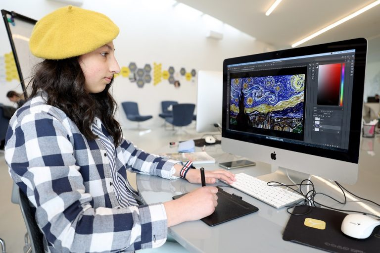

ԹՎԱՅԻՆ ՆԿԱՐՆԵՐ, ՈՐ ՄԻ ՕՐ ԿՀԱՅՏՆՎԵՆ ԲԱՑՕԹՅԱ ԱՐՎԵՍՏԱՆՈՑՈՒՄ
ՍՄԱՐԹ-ի երիտասարդներից ամեն մեկը հայտնի է իր այս կամ այն ուժեղ կողմով, Նվարդ Պետրոսյանն էլ՝ իր թվային
նկարներով։
Թվային նկարչությունը Նվարդի՝ ՍՄԱՐԹ-ում մինչ օրս մասնակցած ծրագրերից մեկն է՝ Անգլերենի,
Կատարողական արվեստի, Ծրագրավորման, Չինարենի և Ձայնային ձևավորման հետ միասին։ Ահա մի քանի ներշնչանք,
որոնք Լոռու Օձուն գյուղից 17-ամյա Նվարդին օգնում են աշխարհում գեղեցիկը տեսնել։

Հասկանալով Վան Գոգին
Նկարչության մեջ Նվարդն ամենաշատը ոգեշնչվում է Վան Գոգի կտավներից ու գտնում, որ իր նկարներում նրա
գույներն ու շունչը կան։
Բացի նկարչի ստեղծագործություններից, ազդվել է նաև ծանոթանալով վերջինիս կյանքի պատմությանը, դիտել նրա
մասին բոլոր ֆիլմերը։
«Ինձ շատ հուզեց այն, որ Վան Գոգն իր կենդանության օրոք միայն մի կտավ է վաճառել»,- ասում է Նվարդը։
Երազանքների քաղաքը
Մոլորակի վրա Նվարդին ամենահետաքրքրող քաղաքը Էդինբուրգն է՝
շոտլանդական մայրաքաղաքը, որ հայտնի է արվեստի և մշակութի հարուստ ժառանգությամբ ու փառատոններով։
«Ինձ համար Էդինբուրգն ամենագեղեցիկ ճարտարապետություն ունեցող քաղաքն է»,
- անկեղծանում է նա՝ անհամբեր սպասելով ամենը սեփական աչքերով տեսնելուն։
Բացօթյա արվեստանոց
Ինչի՞ մասին կարող է երազել ամեն ինչում էսթետիկը փնտրող նկարիչը։
Դե իհարկե, բացօթյա արվեստանոցի։ Լինելով չքնաղ բնություն ունեցող Օձունից՝ Նվարդը սիրում ու գնահատում է
բնաշխարհն ու երազում մի օր այնտեղ իր սեփական արվեստանոցն ունենալ։
Լինել Օձունից
Շուտով սկսվում է տարվա ամենաակտիվ զբոսաշրջային շրջանը, իսկ Հայաստանում զբոսաշրջիկների սիրելի վայրերից է նաև
Օձունը։ Նվարդն ասում է՝ գյուղում զբոսաշրջիկներին մեծ սիրով են ընդունում ու հյուրասիրում այն բոլոր բարիքները,
որ ամբողջ գյուղում աճում են՝ մոշ, հապալաս, մորի․․․ՍՄԱՐԹ-ը՝ երազանքների սկիզբ
Մտածելով իր երազանքների մասին՝ ասում է, որ դրանք բոլորը սկիզբ են առել ՍՄԱՐԹ-ից։ Վերջինս իր մեջ շատ
կարծրատիպեր է կոտրել ու մտածողություն փոխել։ «ՍՄԱՐԹ-ում երբեք չես կարող ձանձրանալ, եթե հակված ես սովորելու․
բոլոր հնարավորությունները ստեղծված են դրա համար»,- ասում է նա։
Ինչպես բոլոր ՔՈԱՖցիները, Նվարդը ևս ՍՄԱՐԹ-ի ճարտարապետությունն առանձնահատուկ է համարում։ Երբ ՍՄԱՐԹ-ում լինեք,
նրան փնտրեք կենտրոնի մեծ պատուհանների ու ծածուկ անկյունների մոտ։